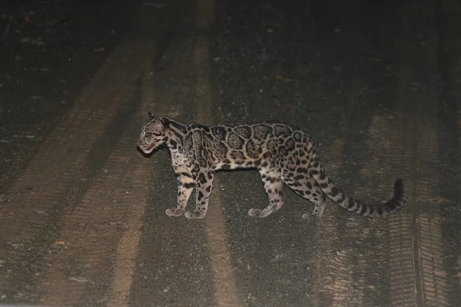

哺乳动物 · 动物界
巽他云豹 Neofelis diardi

分布于苏门答腊与婆罗洲的深色云豹，体侧云状斑块较小而密集，犬齿修长，善攀树，是岛屿雨林中的顶级捕食者之一。
- 分类
- 门脊索动物门纲哺乳纲目食肉目科猫科属云豹属
- 栖息环境
- 低地至中山热带雨林、泥炭沼泽林与河岸林
- 地理分布
- 印度尼西亚苏门答腊、婆罗洲及周边岛屿
- 保护级别
- IUCN 易危（VU）；CITES 附录Ⅰ
物种志
巽他云豹体长 70–105 cm，尾长 60–90 cm，体重约 12–25 kg。毛色比大陆云豹更深，体侧云状斑块较小、边缘更完整，斑块内还散布小斑点，尾粗长，四肢短壮，犬齿相对头骨长度在猫科中名列前茅。
它们分布于苏门答腊、婆罗洲及周边岛屿的低地雨林和山地森林，多在夜间单独活动，善攀树，也常在地面巡行。食物包括鹿类、野猪、灵长类、麝猫和鸟类，捕猎时多从树上伏击。每胎通常 2 仔，妊娠期约 85–95 天。森林砍伐、油棕种植园扩张和盗猎使其栖息地不断缩小，被列为易危物种。
形态与习性
- 食性鹿类、野猪、灵长类、麝猫与鸟类
- 体长70–105 cm，尾长 60–90 cm
- 体重约 12–25 kg
- 繁殖妊娠期约 85–95 天，每胎约 2 仔
- 活动节律夜行性，独居，善攀树
- 特点云状斑块小而密集，犬齿修长
趣味知识
- 巽他云豹的犬齿可长达约 5 cm，相对头骨比例在猫科中十分突出。
- 它的踝关节非常灵活，能头朝下沿树干下行，也会倒挂在树枝上。
- 婆罗洲种群与苏门答腊种群在遗传上已有明显分化，被共同归入本种。